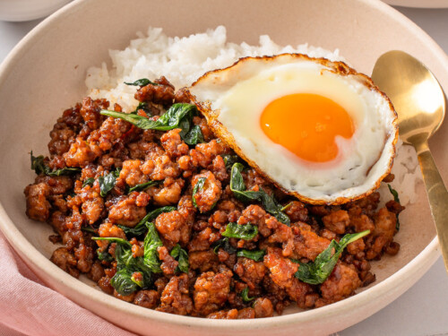

Pad Kra Pao (Thai Basil Stir-Fry)

Spicy Thai basil stir-fry served with rice and a fried egg.
Dish Properties
- Type of Meal
- Lunch / Dinner
- Cuisine
- Thai
- Taste
- Spicy, Savory, Aromatic
- Calories
- 500 kcal (approx. with rice and fried egg)
- Utensil Needed
- Spoon & Fork
- Prep Time
- 15 min
- Time to Cook
- 10 min
- Ingredients
-
- Chicken, Pork, or Beef (minced)
- Fresh Thai Basil Leaves
- Garlic
- Bird’s Eye Chilies
- Soy Sauce
- Oyster Sauce
- Fish Sauce
- Sugar
- Cooking Oil
- Steamed Jasmine Rice
- Fried Egg (optional but traditional)
Instructions
- Pound garlic and chilies together into a rough paste.
- Heat oil in a wok or pan and sauté the chili-garlic paste until fragrant.
- Add minced meat and stir-fry until cooked through.
- Season with soy sauce, oyster sauce, fish sauce, and a pinch of sugar.
- Toss in Thai basil leaves, stir quickly, and turn off the heat.
- Serve hot over jasmine rice with a crispy fried egg on top.